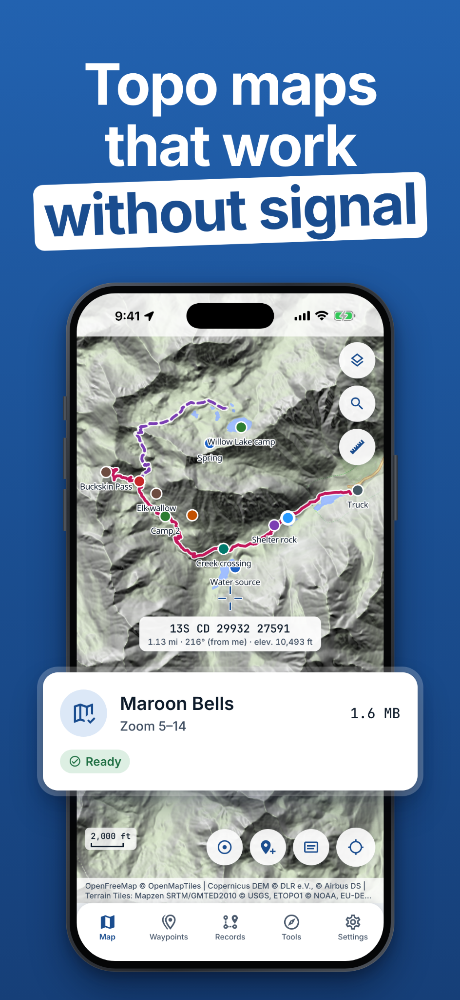
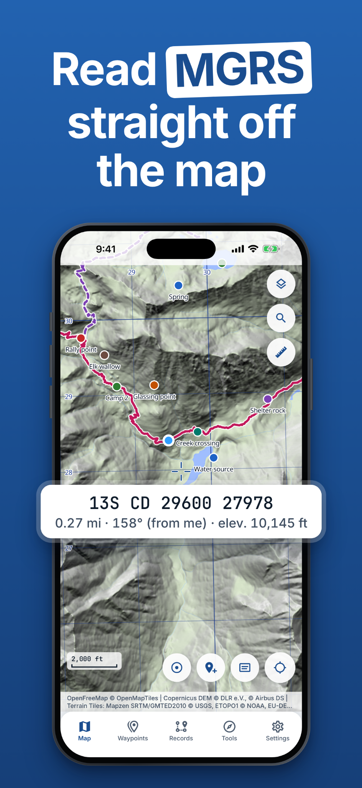
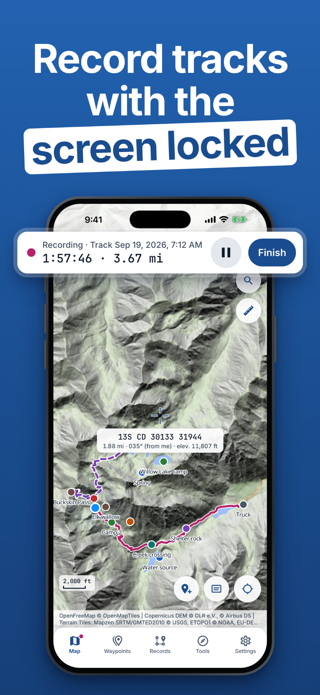
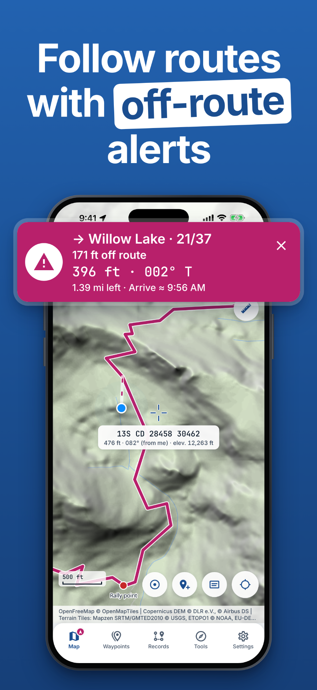
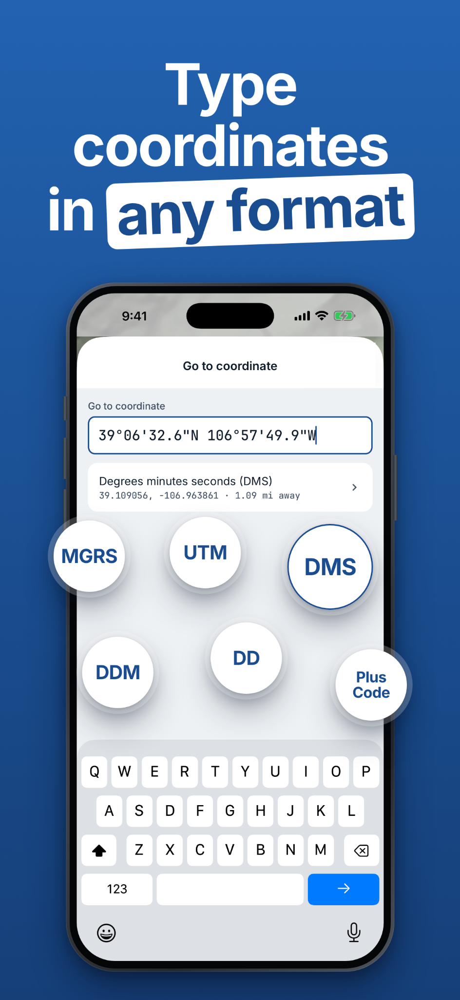
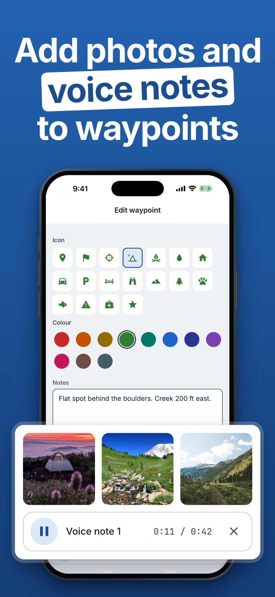

Offline topo maps
Download maps before you go and explore without a signal.
Outdoor GPS & MGRS Map
Pafta
iOS & AndroidExplore offline topo maps, read MGRS coordinates, record tracks and follow routes with off-route alerts.






Download maps before you go and explore without a signal.
Use MGRS, UTM, DMS, DDM, decimal degrees and Plus Codes.
Record tracks, follow routes with off-route alerts and add photos or voice notes to waypoints.
Questions, feedback or a feature you’d love to see? Get in touch.
Contact support ↗